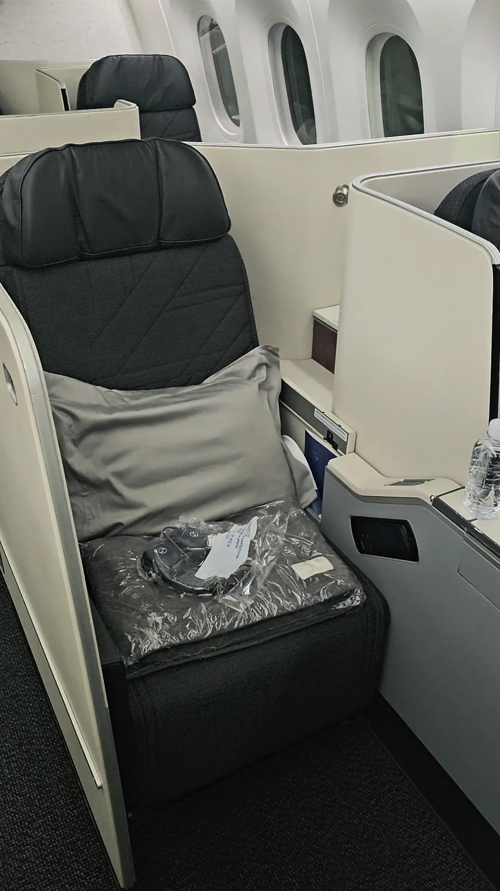
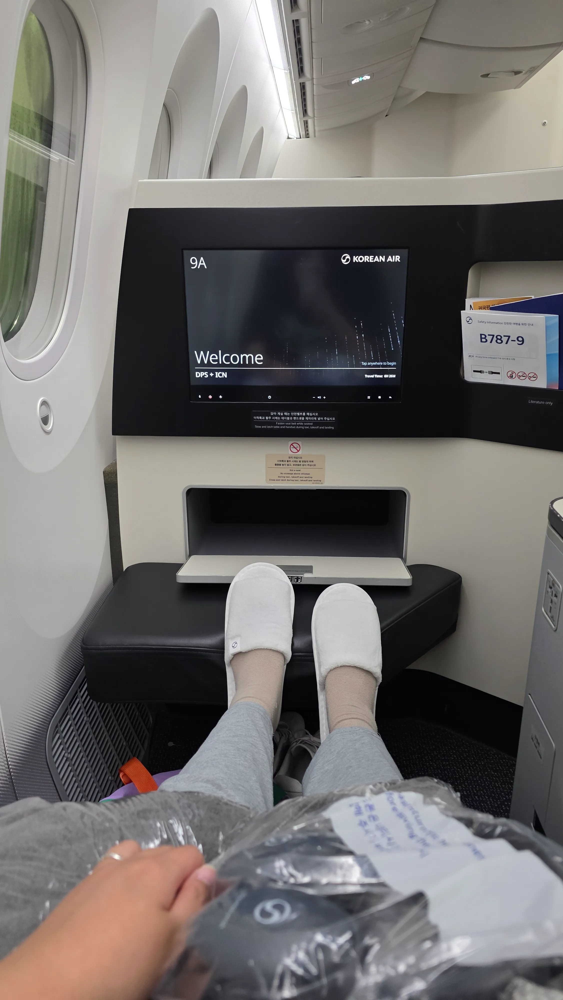
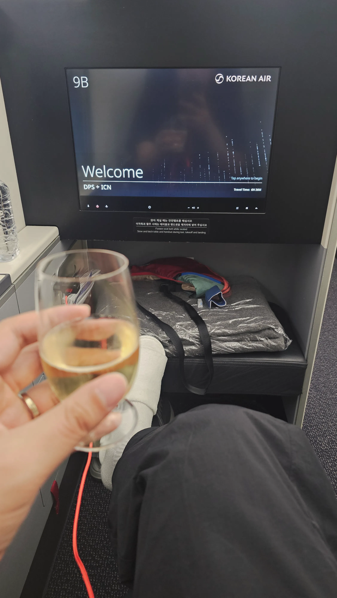
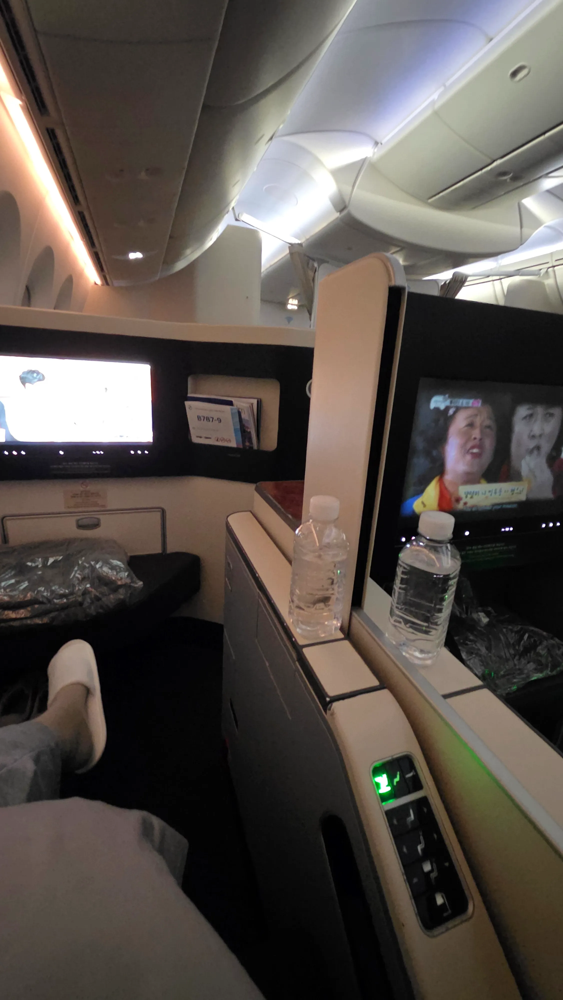
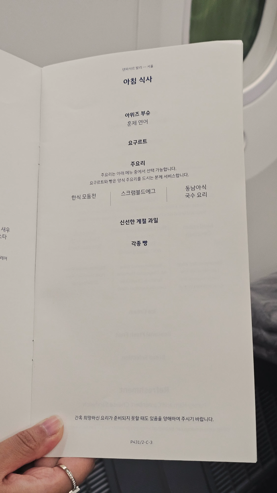
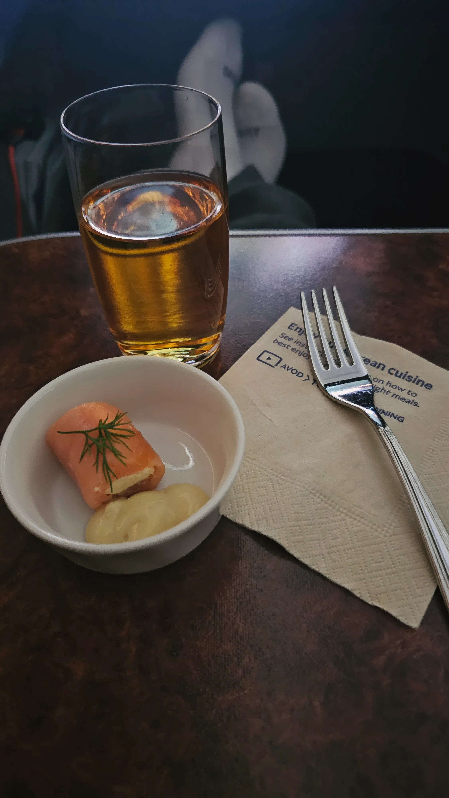
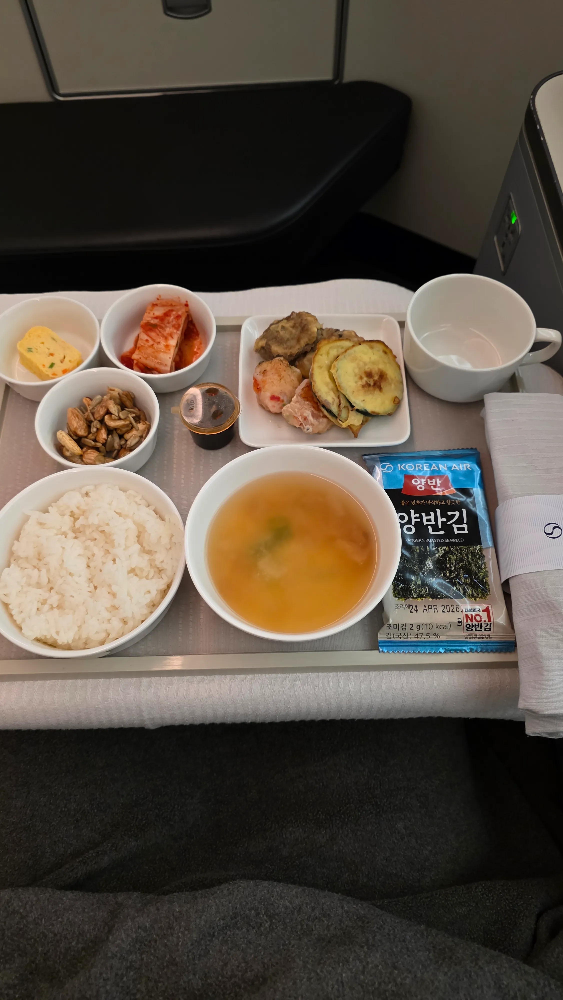
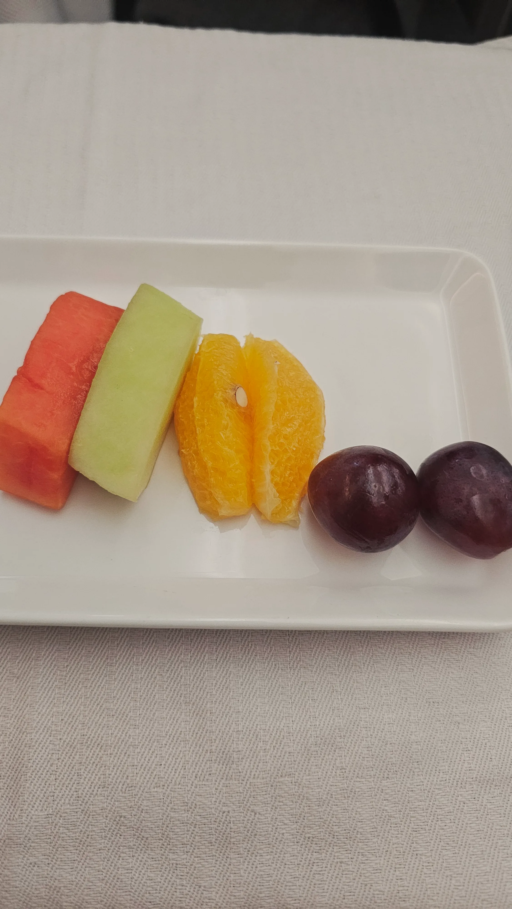

개요
발리에서 인천공항으로 떠날때 이용한 대한항공 KE432 프레스티지 스위트를 소개합니다.

1) 대한항공 KE432
이번에 제가 이용한 발리에서 인천공항으로 떠나는 23:45 ~ 07:55 대한항공 KE432 프레스티지 스위트는 2 2 2 구조로 좌석이 배치돼있습니다.
중앙을 제외한 양옆은 지그재그로 좌석이 배치돼있으나 거의 붙어있다고 봐도 될 정도이니 커플분들은 신경쓰지 않아도 됩니다.



2) 프레스티지 스위트 좌석
공간이 약간은 좁다 생각을 했지만 프레스티지 스위트 2.0 과 큰 차이는 없었습니다.
지그재그 좌석에 앉았는데 일행과 나름 붙어 있어서 불편한 점은 없었습니다.
다만 약간 다른점이 있었는데 사진을 보시면 아시겠지만 창가쪽 자리는 발을 넣지 않고, 통로쪽 자리는 발을 넣는 구조로 돼있었습니다.




3) 기내식
기내식은 아침식사가 제공됩니다. 한식모둠전, 스크램블드에그, 동남아식국수요리 중에 하나를 고르면 되는데
저는 한식모둠전을 주문했습니다.
기내식은 생각보다 별로였습니다. 아무래도 전을 데워서 주기 때문에 생각하는 바삭한 식감은 아니었습니다.
아침이라고 고기가 없다는 점이 너무 아쉬웠습니다.
4) 총평
스위트2.0과는 비슷하지만 또 다른 매력이 있는 좌석입니다. 기내식이 개인적으로는 약간 부실해서 아쉬웠지만 굉장히 피곤한 상태에서 꿀잠자면서 대한민국으로 돌아올 수 있었다는 점이 좋았습니다. 저는 너무 피곤해서 라면도 먹지 않고 술도 마시지 않고 잠만 잤지만 이 글을 보시는 여러분들은 피곤해도 다 즐기시기 바랍니다.